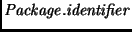
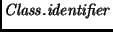
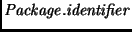
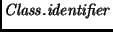
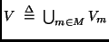
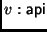

The methods are partitioned into classes , which
are themselves partitioned into packages  .
We assume the usual Java naming conventions with fully qualified names,
i.e., a class has a name

and a method has a name
.
.
We assume the usual Java naming conventions with fully qualified names,
i.e., a class has a name

and a method has a name
.
We assume the program point sets to be pairwise disjoint. The program points of the program is the set .
The program point type indicates whether (entry) a node is the entry point of a method, (seq) a node in which no method call or return takes place, (call) a node from which a method call takes place, or (return) a node in which the execution of the method finishes and control flow returns to the calling method.
For convenience, we introduce the predicates
We further define a predicate
,
which holds if the program point  occurs in a method in a
JavaCard API package
(for standard JavaCard
this corresponds to one of
java.lang,
javacard.framework,
javacard.security or
javacardx.crypto).
occurs in a method in a
JavaCard API package
(for standard JavaCard
this corresponds to one of
java.lang,
javacard.framework,
javacard.security or
javacardx.crypto).